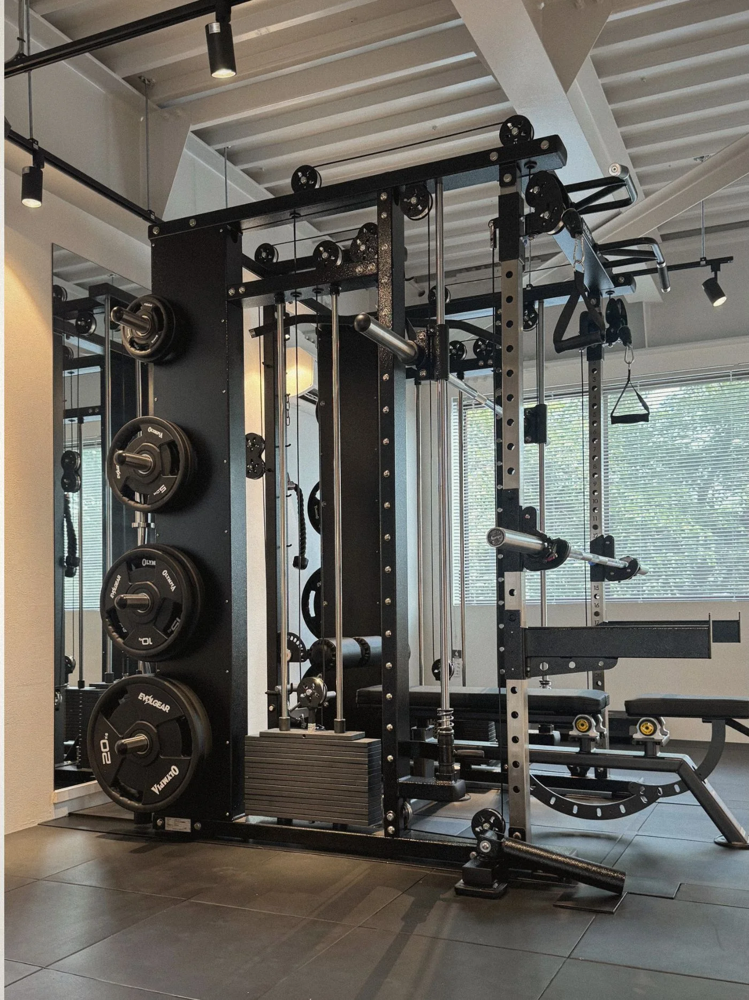
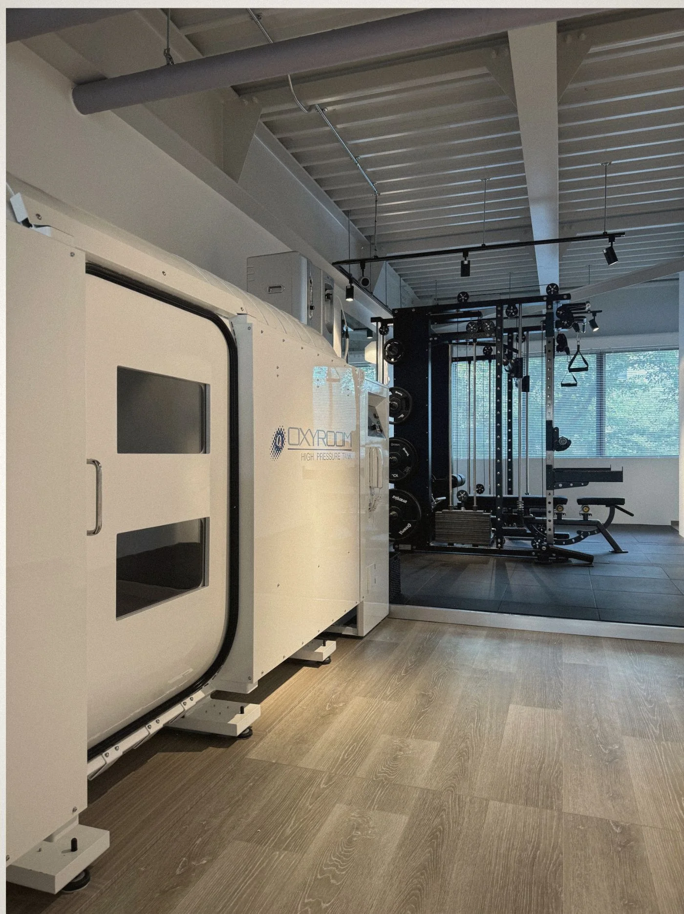
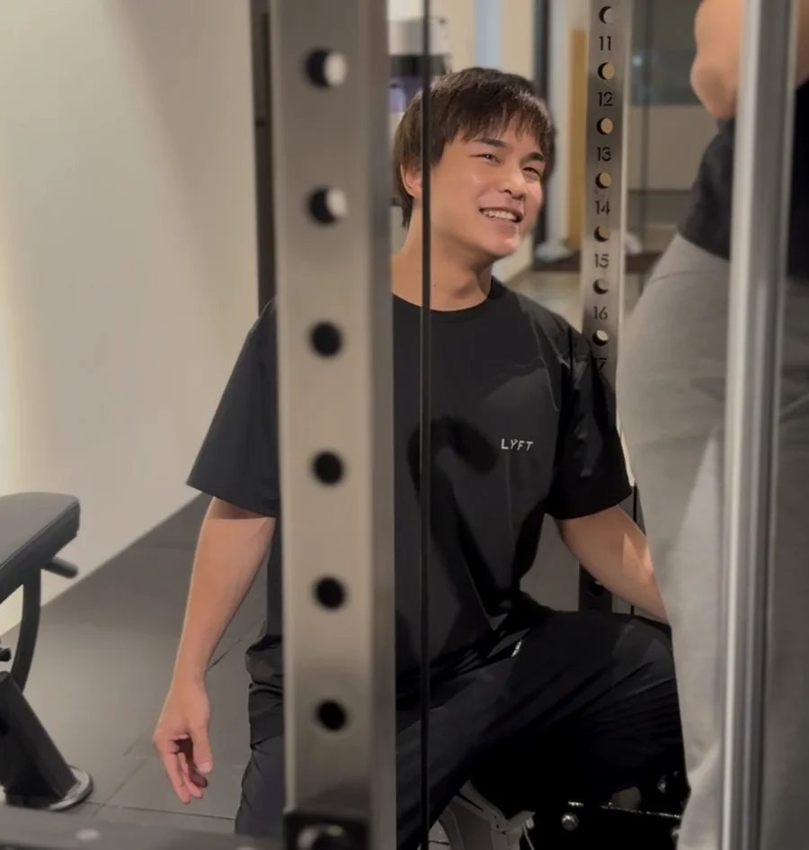
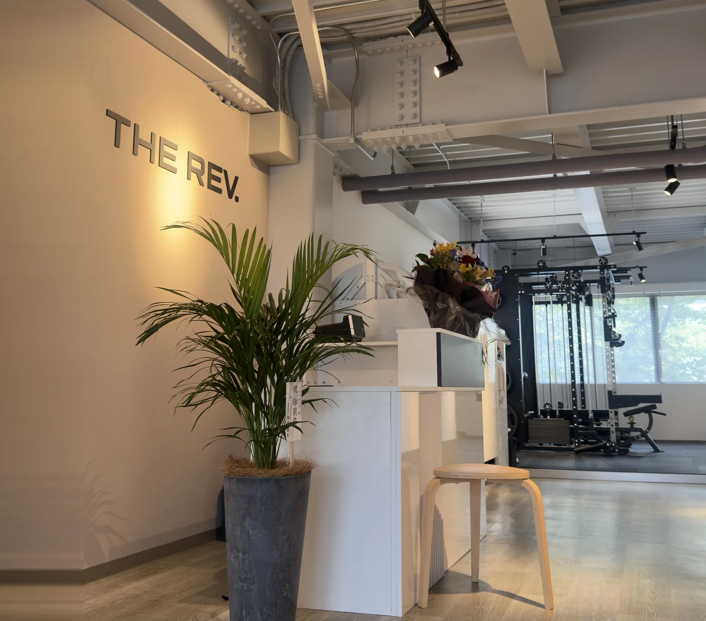

奈良・新大宮 ｜ 完全予約制パーソナルジム
鍛える。
打ち込む。
休む。
今の身体と、目的から選ぶ三つの時間。
パーソナルトレーニングとボクシング。
休むためのリカバリーも、ひとつの選択に。
予約は外部サイトでメニューと日時を選びます。
FIND YOUR RHYTHM.


TRAINING / BOXING / RECOVERYあなたの入口を見つける ↓
Three ways to begin
どんな時間から、
始めましょう。
身体を鍛える。ボクシングを学ぶ。静かに休む。
それぞれの目的に合わせて選べます。
Recovery
普段着のまま、休む時間へ。
酸素ルームとDENBAのある空間で過ごすメニュー。運動をしない日の単独利用もできます。
Trainingとは別料金・単独利用可能Recoveryの設備・利用方法を見る01 / 03 · Training
Our approach / Training & Boxing
「今日はどうですか」から、
内容を考える。
現在は代表トレーナーの服部真騎士が一貫して担当。
目的や状態を聞き、実際の動きも見ながら進めます。
01目的を聞く02状態を知る03動きを見る04内容を考える
In their words
通う人の、
実感から。
既存口コミからの抜粋。
個人のご感想です。
自己流でやっていた時と比べて、フォームをしっかり見てもらえることで違いを感じています。Training / 30代
毎回楽しくボクシングに取り組めて、こちらに合わせて丁寧に見てもらえる安心感があります。Boxing / 50代
Your first visit
最初の一回を、
思い描けるように。
Training / Boxing / Recovery
初回体験・各税込¥3,300
初回体験・各税込¥3,300
所要時間目安 約60分来店の目安予約の約5分前支払い体験後、店頭で
現金・クレジットカード・PayPay対応。その場で入会を決める必要はありません。持ち帰って検討できます。
目的と状態を見て、動いてみる。
動きやすい服装・室内用シューズ。タオル持参をおすすめします。シューズ・タオルは貸出可能です。
- 01受付・目的と状態の確認
- 02実際に動き、必要な確認
- 03自分に合わせた数種目
- 04振り返り・会計
持ち物・設備・ご利用上の詳細
土足不可。水あり。初回でもシャワーを利用できます。
身体を動かし、一打を体験する。
動きやすい服装・室内用シューズ。タオル推奨。シューズ・タオル・グローブ・バンテージの貸出は無料です。
- 01受付・簡単なカウンセリング
- 02実際に身体を動かす
- 03ボクシング体験
- 04振り返り・会計
持ち物・設備・ご利用上の詳細
土足不可。水あり。初回でもシャワーを利用できます。
普段着のまま、休む時間を。
特別な持ち物・着替えは不要。利用前に注意事項の説明、所定の用紙記入と同意があります。
- 01来店・説明と同意
- 02靴を脱いで入室
- 03加圧・滞在・減圧
- 04退出・会計
持ち物・設備・ご利用上の詳細
耳に違和感があるときは無理をせずスタッフへ。圧力調整・途中終了が可能です。途中で終了した場合、その利用はそこで終了します。詳しい注意事項はRecoveryページで確認できます。
Recoveryの注意事項を確認する ↗| Training | 月2回 月4回月額Trainingの入会金 22,000円月額プラン・入会金を見る ↗ | ¥17,600 ¥30,800 |
|---|---|---|
| Boxing | 5回券 10回券 回数券の料金・有効期限を見る ↗ | ¥29,700 ¥55,000 |
| Recovery | 都度利用 60分Trainingとは別料金。 単独利用できます。30・60・90分の料金を見る ↗ | ¥5,500 |
その他の料金・適用条件は料金ページでご確認ください。

Your trainer
服部 真騎士
目的やその日の状態を伺い、実際の動きを見ながら内容を考えます。現在はTraining・Boxingの初回から継続まで一貫して担当し、Recoveryもご案内しています。
元プロボクサー ／ 代表個人の累計指導セッション 約5,000

A place for your next step
新大宮駅から、徒歩7分。
奈良県奈良市法華寺町126−1 FKビル1F
専用駐車場あり・完全予約制
火・水・木 9:00–13:00 / 15:00–19:00
土・日 9:00–13:00 / 14:00–18:00
月・金 定休
Questions & reading